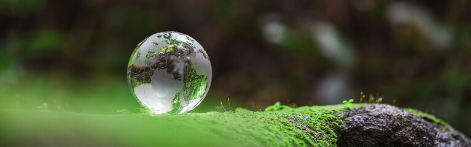

Protected areas are regions of natural environments managed by humans to conserve wildlife, biodiversity, and ecosystems, ensuring their future sustainability. These areas can include wildlife reserves, national parks, and marine protected zones. Protected areas are vital for maintaining balance within various ecosystems, which is essential for keeping our planet habitable for all living beings. By safeguarding wildlife and their ecosystems, we can mitigate the impacts of human activity and climate change, which pose significant threats to our world. By prioritizing the establishment and management of protected areas, we can secure a future with healthy air, water, food, and climate regulation for generations to come.
